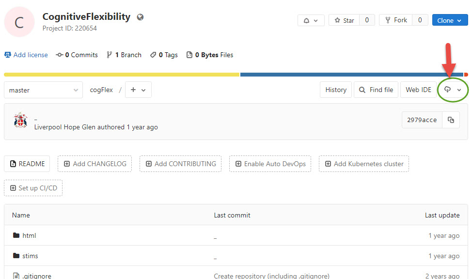

Psychology Labs and Resources

Department of Psychology
Experiment Bank
Introducing an experiment bank to streamline the process of running experimental projects for staff and students. It includes a variety of developed tasks, some for Pavlovia (online studies) and others for face-to-face labs. Templates are available for common tasks like counterbalancing and ensuring participant understanding. All experiments are hosted on GitLab with specific repository links. Resources can be downloaded, modified, and uploaded to Pavlovia for use with participants.
Experiments
Downloading a Task
- You should create an account in Pavlovia using your @hope credentials. This will also allow you automatic access to a GitLab repository. If you do not use your @hope email address to register, you will be unable to run your study online
- Figure 1 indicates the download icon in the gitlab interface
Figure 1 - How to download from git - Once downloaded you will be able to open the .psyexp file and edit to suit your experiment